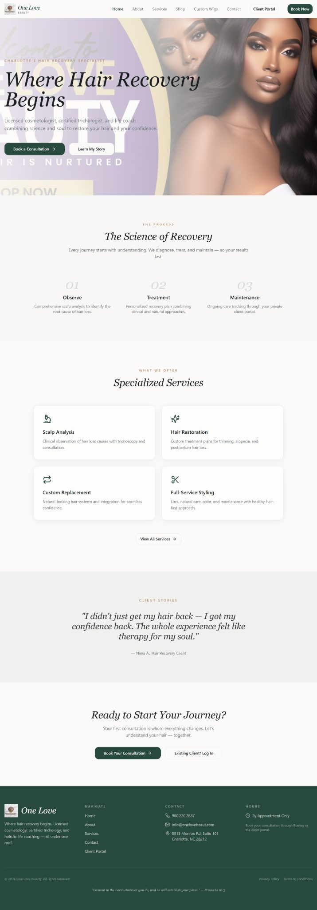

For businesses that need more customer action
Turn more website visitors into enquiries, bookings or sales.
If people visit your site but still need you to explain the offer, find the right service for them, or tell them what to do next, the website is leaving too much work to the customer.
The problem
Your website can look professional and still lose the sale.
People cannot tell quickly whether you are right for them.
When the first screen is vague, visitors have to read too much before they understand the offer.
The site ends with “contact us” when the customer needs more help deciding.
A buyer may need a recommendation, price range, eligibility answer, booking slot or clearer service comparison before they are ready to enquire.
You pay for traffic that lands in the same confusing journey.
SEO, ads and social media cannot compensate for a site that does not make the next step obvious.
What better looks like
A visitor should know what you do, why it matters and what to do next.
The goal is not a prettier homepage. The goal is a customer journey that helps the right person move forward with less uncertainty.
What is costing you
- Vague headline and service language.
- Too many equal calls to action.
- Proof buried away from the buying decision.
- Generic forms for every type of enquiry.
- Slow or awkward mobile experience.
What I build toward
- A clear first-screen promise.
- Service pages that help people choose.
- Proof where hesitation happens.
- Quote, booking, finder or guided-enquiry flows when useful.
- A faster, easier path to action.

How I help
Your website can answer the question the customer is already asking.
Instead of forcing every visitor into the same contact form, I can build decision tools around the actual buying journey.
- Service finder — “Which option is right for me?”
- Quote estimator — “What might this cost?”
- Eligibility checker — “Do I qualify?”
- Booking flow — “When can I start?”
- Guided enquiry — “What information do you need from me?”
The plan
Check it. Decide what deserves change. Build only that.
You should not have to approve a redesign before anyone has shown you what is actually wrong.
Run the Website Check
Review clarity, trust, conversion, discovery and technical foundation.
Choose KEEP, FIX, REBUILD or GROW
I separate useful existing work from the parts actively holding the customer journey back.
Implement the priority fixes
Build the pages, interaction, tracking or full website the diagnosis actually justifies.
Platforms I can work with
The customer journey matters more than the builder.
If your existing platform can support the right solution, there is no reason to replace it just to create a project.